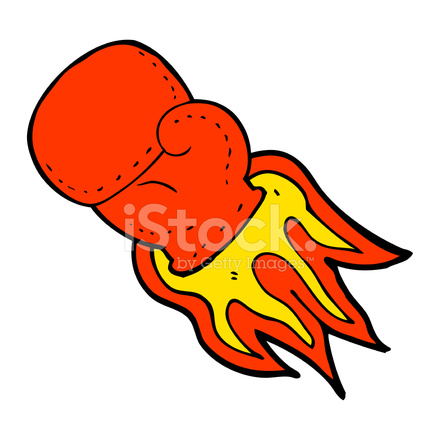

Fatos sobre o Stomatopoda
Infos Gerais
Odontodactylus scyllarus (ou estomatópode), chamados popularmente de tamarutacas ou de lacraias-do-mar no Brasil, é uma ordem de crustáceos marinhos da subclasse Hoplocarida, que agrupa cerca de 400 espécies, caracterizadas principalmente pela morfologia da segunda pata torácica, que é modificada em apêndice subquelado, lembrando uma pata de louva-a-deus
Uma explosão nuclear de cores
Enquanto nós humanos conseguimos identificar apenas 3 cores primeiras, sendo derivadas delas todas as outras cores que vemos, o Stomatopoda consegue enxergar um total de 16 cores primarias, então sabendo que com apenas 3 cores primarias voce ja consegue enxergar uma quantidade enorme de cores, da pra imaginar a quantidade de cores que o Stomatopoda consegue enxergar tendo 16 cors primarias
O soco mais de 80hm/h

O Stomatopoda tem garras na frente de seu corpo e essas garras sao capazes de acelerar a uma velocidade enorme, sendo uma velocidade igual a de um rifle de calibre 22. Isso faz com que seu soco tenha uma velocidade aproximada de 80km/h
Aqui estao todas referencias usadas no artigo
- Curiosidade https://theoatmeal.com/comics/mantis_shrimp
- Informações https://pt.wikipedia.org/wiki/Stomatopoda
- Imagens https://www.google.com/url?sa=i&url=https%3A%2F%2Fwww.freeimages.com%2Fpt%2Fpremium%2Fcartoon-super-punch-578908&psig=AOvVaw1iTKH5_R_kuw_IgK66bILU&ust=1636089555826000&source=images&cd=vfe&ved=0CAsQjRxqFwoTCKj89PL6_fMCFQAAAAAdAAAAABAJ https://www.google.com/url?sa=i&url=https%3A%2F%2Folhares.com%2Fmuitas_cores_foto287756.html&psig=AOvVaw0u9uoykFmlB6JrdLuz1eAZ&ust=1636089123795000&source=images&cd=vfe&ved=0CAsQjRxqFwoTCKCz99P8_fMCFQAAAAAdAAAAABAD